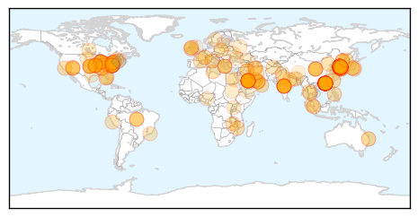
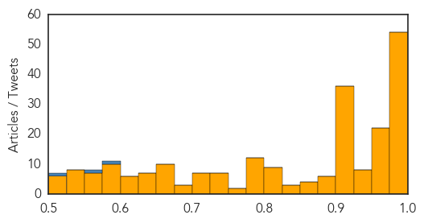
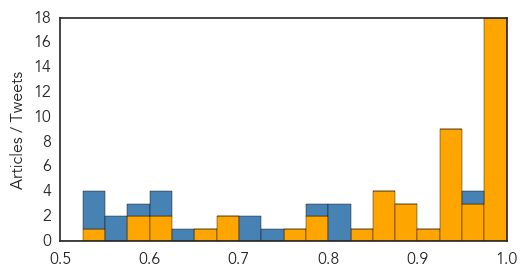

Unknown
30-Day Web Trend
6 alerts, 1 warnings

30-Day Twitter Trend
5 alerts, 5 warnings

Article Locations
Article Confidences
Top Articles:
- 1.000
- MERS infections exceed 100 in Korea
- 0.999
- MERS May Be Waning, But Steer Clear of Camels
- 0.999
- Experts puzzled by virus jump from animals to humans in the Middle East
- 0.999
- Park postpones US trip as South Korea MERS toll hits nine
- 0.999
- The World On Arirang
- 0.999
- iafrica.com S. Korea MERS death toll hits nine
- 0.999
- South Korea MERS outbreak: 7 dead; 2,500 quarantined
- 0.999
- 9 dead in South Korea MERS outbreak: President cancels US visit
- 0.999
- The World On Arirang
- 0.998
- Park postpones US trip as South Korea MERS death toll hits nine
- 0.998
- MERS Is No Reason to Close Schools, WHO Tells S. Korea
- 0.998
- South Korea MERS outbreak: Officials brace for 'most important p
- 0.998
- South Korea MERS death toll hits nine
- 0.998
- South Korea MERS outbreak: Officials brace for 'most important period'
- 0.997
- South Korea to check pneumonia patients for MERS virus
- 0.997
- MERS claims 9th victim; 13 more infected
- 0.997
- South Korea reports 13 new MERS cases, two more deaths
- 0.997
- (4th LD) S. Korea reports two more MERS deaths, 13 new cases
- 0.996
- MERS outbreak delays S Korean President Park Geun-hye’s US trip
- 0.996
- S. Korean president delays U.S. visit after MERS infections top 100 in 3 weeks
- 0.996
- WHO asks countries to remain alert on MERS
- 0.995
- Why South Korea's MERS Outbreak Might Not Be as Bad as SARS
- 0.995
- WHO Urges for the Reopening of 2,700 Schools in South Korea
- 0.995
- Woman isolated in Hong Kong hospital over MERS
- 0.994
- Woman isolated in Hong Kong hospital over MERS - Regional
- 0.994
- Woman isolated in Hong Kong hospital over MERS
- 0.994
- MERS will be stopped soon
- 0.993
- Singapore expands Mers checks on air travellers, Others news, Health News, AsiaOne YourHealth
- 0.993
- Woman isolated in Hong Kong hospital over suspected Mers, East Asia News & Top Stories
- 0.993
- Woman isolated in Hong Kong hospital over MERS
- 0.992
- Woman isolated in HK hospital over MERS – BorneoPost Online
- 0.992
- President Park Geun-hye delays Sunday's visit to US
- 0.991
- (MERS virus) South Korea struggles to contain spread, 13 more infected
- 0.990
- WHO urges S.Korea to reopen schools shut over MERS
- 0.989
- S. Korea's Park postpones US trip, MERS deaths increase
- 0.988
- Suspected MERS in HK raises fears of regional spread
- 0.988
- Risk of Mers cases in China has ‘increased significantly’, says government
- 0.988
- Beijing warns of MERS risk
- 0.986
- Police Charge 8 People For Spreading False Rumors About Deadly Disease
- 0.986
- Hong Kong suspects two MERS cases
- 0.986
- S. Korean businesses step up precautionary measures against MERS
- 0.985
- Middle East respiratory syndrome cases broken down by country
- 0.985
- One of four suspected Mers cases picked up at Hong Kong health centres tests negative
- 0.985
- New deaths as S Korea sets up #MERS clinics countrywide
- 0.985
- S. Korean authorities’ instructions on MERS don’t match with actual situation
- 0.983
- Severe tuberculosis case sparks hunt for possible victims
- 0.983
- Nine Dead, 108 Infected As Authorities Struggle to Contain Virus
- 0.980
- Park postpones US trip as MERS death toll hits nine – BorneoPost Online
- 0.980
- 77-year-old overcomes MERS
- 0.979
- S. Korean President Delays U.S. Visit amid MERS Crisis
Showing top 50 articles...
Top Tweets:
- 0.725
- Recent MERS cases emphasize importance of good infection control in health care system. Read more via: http://t.co/XLsExlpMps
- 0.592
- RT: Hufof MERS outbreak by the numbers: 30 cases, 13 deaths dating to April 20. 4 HCWs. 17 with confirmed links, rest unde…
- 0.591
- MERS outbreak in KSA: Tho not reported, Hufof in east Saudi is also having an outbreak. 1 new case today there. http://t.co/pfBoGVNLSx 1/n
- 0.572
- Hufof MERS outbreak by the numbers: 30 cases, 13 deaths dating to April 20. 4 HCWs. 17 with confirmed links, rest under investigation. 2/2
- 0.572
- Flu Returns As MERS Surveillance Intensifies http://t.co/8Xi820k3YI
- 0.568
- South Korea reports two more deaths, 13 new cases of MERS. 108 total cases now with 9 deaths. http://t.co/DWtRT5h4Td
Ebola
30-Day Web Trend
0 alerts, 0 warnings

30-Day Twitter Trend
0 alerts, 0 warnings

Article Locations

Article Confidences
Top Articles:
- 1.000
- Ebola progress stalls in Guinea and Sierra Leone
- 1.000
- MERS outbreak in South Korea holds lessons for U.S.
- 1.000
- After Ebola, India Faces Threat Of MERS Virus
- 1.000
- 4 lessons from Ebola wars: Our view
- 0.999
- Communication is key in halting disease’s spread: U.S. doctor-INSIDE Korea JoongAng Daily
- 0.998
- Government of Canada strengthens Ebola preparedness for Canadians
- 0.997
- Liberia still cautious one month into being declared free of Ebola transmission
- 0.997
- Potential MERS victims leave quarantine
- 0.996
- Ebola: MSF expands activities in Mali
- 0.995
- Hospital clears traveler who was monitored for possible Ebola
- 0.995
- Meet the Most Powerful Doctor in America
- 0.992
- Ebola: MSF Ebola Transit Unit to support safe reopening of Monrovia hospital
- 0.990
- Officials track path of traveler with drug-resistant TB
- 0.987
- Italian nurse cured of Ebola
- 0.986
- African American newspaper, Washington D.C.
- 0.985
- No Ghanaian should be a guinea pig for Ebola experiments -
- 0.979
- Americans And FDA Officials In Support Of Ebola Vaccine Trial Should First Be Tested - Kwame Akuffo
- 0.976
- Italian nurse cured of Ebola
- 0.973
- Labor, Greens question Australia's Ebola response
- 0.966
- Just-in-time disaster planning does not work
- 0.958
- I'm ready for Ebola vaccine trial
- 0.948
- I'm ready for Ebola vaccine trial
- 0.947
- FDA Okays Ebola For Phone Vaccine Trial – Daily Guide Ghana
- 0.946
- Ebola virus case-fatality rate has reduced: Study
- 0.946
- Australian Ebola hospital in Sierra Leone under fire for extravagant costs per patient - Xinhua
- 0.942
- Last year's Ebola strain weaker than that of 1976
- 0.942
- The threat of another outbreak from a vaccine preventable disease is real health minister warns!
- 0.938
- Ghana halts Ebola vaccine trial due to community protests
- 0.938
- UN's Ebola mission HQ in Ghana to close
- 0.929
- Health Adviser Presents Medical Supplies and Equipment to Hospitals
- 0.901
- Experts to assess mental health needs after Ebola in Liberia - Liberia
- 0.897
- North Korea maintains muted reaction to MERS outbreak
- 0.884
- Deadly virus: UN closes Emergency Ebola Response Headquarters in Ghana
- 0.879
- WHO holds meeting on Ebola recovery plans
- 0.862
- WHO hold meeting on Ebola resilience and recovery plans
- 0.857
- Ebola: Owning the Fight in Kambia
- 0.857
- WHO Rep visits Chinese Lab « Awoko Newspaper
- 0.852
- Experts from Ebola?affected countries galvanise global and national support for effective implementation of health recovery -
- 0.837
- Would You Wear an Ebola T-Shirt?
- 0.792
- Ebola: MSF staff member evacuated from Mali
- 0.784
- Ebola vaccine trial: FDA exposes Health Ministry
- 0.772
- Cambridge nurse Anna Cross who beat Ebola would ‘return to West Africa fight another outbreak’
- 0.698
- Why do we get all shook up about contagious diseases?
- 0.691
- FDA okays Ebola vaccine trial
- 0.670
- Cameroon Launches Epidemiological Surveillance Training
- 0.617
- Ministry of Health suspends Ebola vaccine trials
- 0.605
- A vision that could end the spread of disease
- 0.596
- Sierra Leone: Journalists can’t account for Ebola media funds given to SLAJ
- 0.584
- Equipaje de mano deberá ser 20% más pequeño
- 0.528
- Sierra Leone News: Faith-based NGO’s recognized for ebola Burial « Awoko Newspaper
Showing top 50 articles...
Top Tweets:
- 0.995
- In Sierra Leone, Graduating Under Ebola June 9th, 2015 · 2 min read - Ebola Deeply http://t.co/6CX7j3Quev ebola EVD
- 0.970
- In Sierra Leone, Graduating Under Ebola June 9th, 2015 · 2 min read - Ebola Deeply http://t.co/vteXsuzEsC
- 0.957
- Delayed Disease Progression in Cynomolgus Macaques Infected with Ebola Virus Makona http://t.co/TrBpGqPJUY
- 0.942
- The Ebola outbreak in West Africa is not over yet. WHO Ebola situation report (10 June) http://t.co/iJRMhGpXwc http://t.co/UCkiQyYqbE
- 0.925
- Ebola Virus Virulence http://t.co/PCEGlZ4Ug7
- 0.903
- Ebola Cases Rise Again in West Africa - http://t.co/FMQyohd10H http://t.co/M2tR37hnyG ebola EVD
- 0.902
- Cases of Ebola recede in West Africa, but fears of recurrence remain http://t.co/mQFEfToe5t
- 0.901
- RT: CDC:25 confirmed Ebola cases were reported from Guinea and Sierra Leone, incl some areas W/no cases 4 weeks http://t.co/aW…
- 0.878
- Ebola crisis: UN's Ebola mission HQ in Ghana to close UNMEER http://t.co/NQifPcZ1rM
- 0.875
- Ebola, The Executive Summary: June 8, 2015 June 8th, 2015 · 2 min read - Ebola Deeply http://t.co/hasvZx5Ar7 ebola EVD
- 0.869
- Would You Wear an Ebola T-Shirt? - RYOT http://t.co/ui1WtjQWTW ebola EVD
- 0.858
- FDA approves Ebola vaccine trial in Ghana - Citifmonline http://t.co/CzrIbkQ0Zi ebola EVD
- 0.838
- RT: Weekly ebola cases back up - 13 Guinea, 12 Sierra Leone. This is not over, and rainy season started. https://t.co/TfuXRWgBYH
- 0.835
- The Ebola outbreak in Guinea is not over yet. WHO continues to investigate suspected cases https://t.co/Ns31ts6a8M http://t.co/3Y1vezbgVV
- 0.802
- RT: Latest Ebola report from WHO: worrying trend in cases in Guinea & Sierra Leone. Crucial to keep up emergency response …
- 0.802
- RT: Ebola: CDC lab in Sierra Leone has done >17,000 tests. Sierra Leone is near finish line but needs to keep focus & intens…
- 0.773
- What my Ebola scare taught me - PBS NewsHour (blog) http://t.co/wnaNLGjqUO ebola EVD
- 0.771
- Meet Disease Detective Jose and read his story about fighting the Ebola outbreak in Liberia: http://t.co/rie6XlY9Xj http://t.co/LLv4ONEZRh
- 0.669
- Craig Spencer, the N.Y.C. Doctor Who Got Ebola, Talks About His Recovery and ... - People Magazine http://t.co/J9QmiCma9B ebola EVD
- 0.645
- RT: Ebola progress stalls in Guinea and Sierra Leone http://t.co/vpN1U1U6xw
- 0.601
- 2/2 Worrying fact: Some of last week's Ebola cases aren't part of known chains of transmission. Undetected spread puts containment at risk.
- 0.586
- From today's Situation Report -> 31 new Ebola cases in Guinea & SierraLeone in the week to 7 June https://t.co/ibtk7uY3DS EbolaResponse
- 0.546
- RT: WHO's latest shows stall in ebola progress: cases from unknown transmission chains, continued community resistance ht…
- 0.546
- RT: WHO's latest shows stall in ebola progress: cases from unknown transmission chains, continued community resistance ht…
- 0.521
- Study: Ebola virus didn't mutate into more dangerous strain READ: http://t.co/WvMfBPJrvG ZeroCases http://t.co/qRxAiBe8jl
- 0.520
- Just In: Boston patient monitored for possible Ebola virus - Boston Herald http://t.co/tGmMJIwoIr
- 0.517
- More than 90% of the total EbolaResponse workforce has been national personnel from the Ebola affected countries http://t.co/5wpbAFoHAc
- 0.510
- G7Summit outcomes on health in developing countries ebola http://t.co/nLVMuvZttu